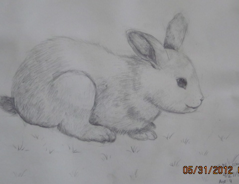
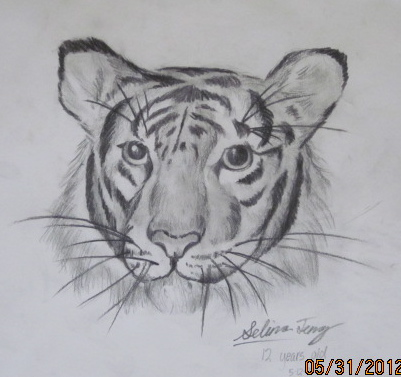
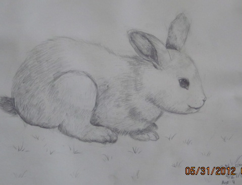
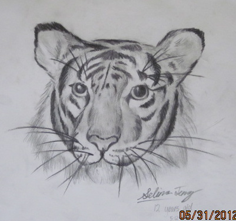

|


|
For lower level course, Emphasis is
placed on understanding simple elements of design (line, form, color, texture, symmetry, etc.).
Intermediate course offers a wide variety of media such as pencil, oil pastel, water colors, and ink, and provides an atmosphere that
encourages the full realization of each individual's potential.
Advanced course encourages kids with broader, working knowledge of many materials and techniques to have a confidence in their
own self-expression and ability level.
Art Program
Our outstanding art programs led by Ms. Jiao Ying has won great reputation in Portland area.
It has not only attracted many talented students,
our students are frequent winners of many national and state art shows/contests. We have a very strong art teaching team who are
devoted to bring out the full strength of imagination and self-expression of our young artists.
Below are some art masterpieces from our various art classes.
本校中文教学聘有2位双语资深美术教师
Ms.Jiao, Ying: Our principle, Ms. Jiao, is a senior education specialist herself. She was honored as Outstanding Teacher by US Children
Art Center and Oregon Humane Society. She received the 21st Century Art Contribution Award from the US
Asian Pacific Art Academy. China State Council honored her as an Outstanding Overseas Teacher.
Jiao Ying Chinese culture and art school has art classes for K-12 children. Since the establishment in 1997, students from the school have won numerous awards in national and international art competitions. The school accomplishments have been highly acclaimed by students, parents and the communities.
The art class material is based on many years of successful experience from the principle Ms. Jiao Ying. The entry classes, designed for students under 7 years old, emphasize on cultivating the inner passion that all kids have for expressing their imagination and feeling through drawings, and on the basic drawing skills. This include: 1) learn the basic shapes and how to use the basic shapes to transition the understanding from 2 dimension to 3 dimension and to draw the familiar objects from such simple shapes; 2) establish the concept of colors, understand cold color versus warm color and can use color for different expressions. During the training Principal Jiao Ying would not force students to copy and follow the exact objects in the learning material. Some of you might have been wondering: If students not follow the sample objects, what can they really learn? Principal Jiao Ying’s answer is: that’s exact why they need a professional who is familiar with how children learn. Although the skills and methods are important, at this stage, the love and passion is more precious. There is the risk that creativity and imagination might be limited if they are often asked to copy things. Principle Jiao Ying’s philosophy is to protect their imagination and allow them to grow and be expressed. And most important, they enjoy the process of creating their own work and learn at their own pace for the drawing skills. This whole process will lay a great foundation for our little artists.
After having basic level of modeling ability, the students, older than eight or those who already gone thru the primary drawing classes, need training on sketches to meet the needs for depicting living images and further to improve the drawing skills. This is when higher level courses should be considered. At this stage, the teacher will offer students higher level training on drawing skills such as Still-Life sketching, Animal sketching, coloring, and creative drawing, etc. The students are required to further recognize, understand, and grasp the modeling factors that include shapes, spacing, perspective and so on. Using the observation approaches such as analyzing, comparing, judging, relating and contracting, etc. the students will get the idea of the physical characteristics of objects, the tendency and the proportional relationship, light and shadow, atmosphere and texture in order to more accurately depict the object. The primary focus is on training the students to study more concrete, more complex relationship of the objects. The students at this age already have strong comprehensive ability. The teacher will help them to copy some of the excellent art work with models, which is also an important supplementary learning approach to learn and work out the drawing skills in order to improve the artistic sensibility. Drawings and sketch training can help the students to see with the artist's eyes and to draw with the artist’s hand, to establish the overall observation approaches, to grasp the flexible use of line and reasonable use of light and shade, and improve the ability to capture the feeling of the object. “Express the spirit through form and giving ample consideration to depicting the internal and external.”
The goal of children’s art education is not to cultivate them into professional painters, but rather to provide life-changing education. It is psychology, sentiment,
and personality training. Education without art is not complete. Encouraging students to actively participate in art activities is a good way to cultivate their ability to observe, memorize, imagine, and being creative. Through painting creation, students express and unfold their internal desire and emotion. It also helps them to improve their understanding of the world. Enlightening intelligence through painting studies is very effective. Every child should receive professional art training and enlightenment at early childhood. It will lay a sound foundation for them to fully realize their potentials when they grow up. If you want to understand and educate children, you need to master this golden key of children’s painting training.
 |


|


 


